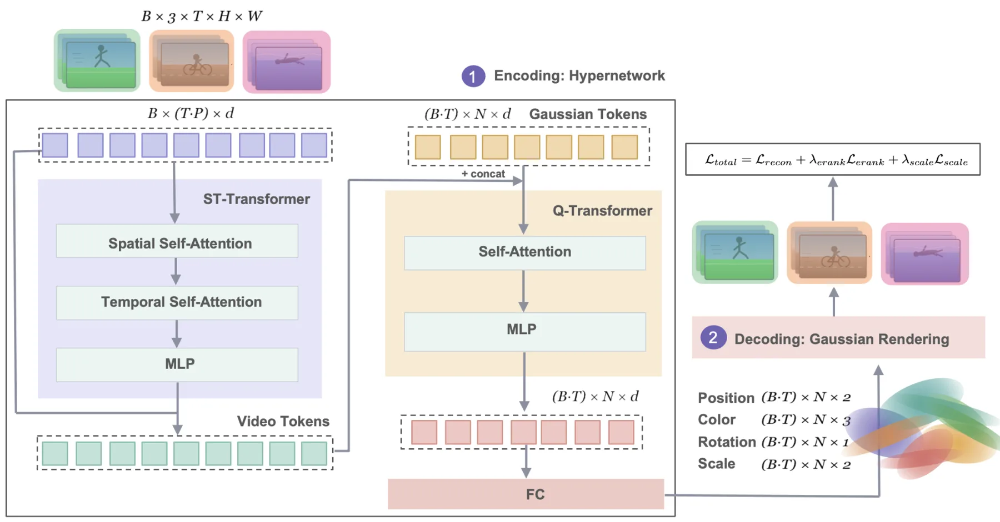
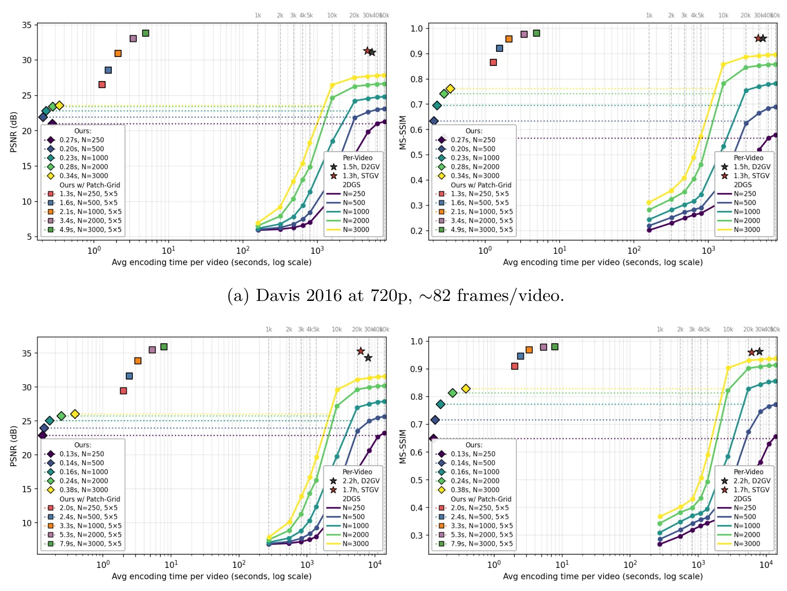
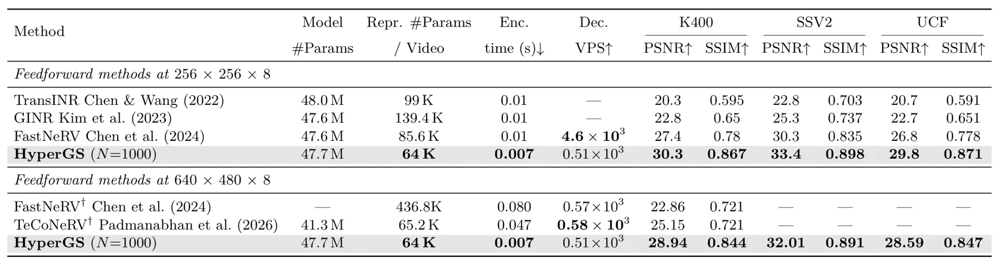
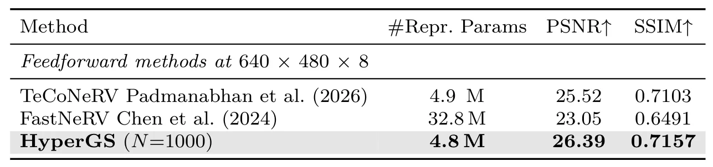

HyperGS：快速且可泛化的 Gaussian 视频表示HyperGS: Fast and Generalizable Gaussian Video Representation
前馈 Gaussian 与退化正则对实时显式表示有启发，但其对象是二维视频编码而非三维定位建图，领域相关性低于前五篇。
一句话工作总结
一次前馈生成逐帧二维 Gaussian 视频表示，并用自适应秩正则抑制针状退化。
摘要
HyperGS 用前馈、无逐视频优化的方法，从任意视频一次预测 Gaussian 表示。系统以因子化时空 Transformer 提取视频 token，再用可学习 query Transformer 为每帧生成 8 参数二维 Gaussian。针对跨视频训练时出现的针状退化，作者引入强度动态调整的 rank-based 几何正则。论文报告在匹配重建质量下将编解码速度提高 10^4 至 10^5 倍，并可零样本泛化至 720p；在 K400、SSv2 和 UCF101 上较先前视频编码器提高 2.9–3.1 dB PSNR。
Gaussian Splatting has emerged as an effective representation for video, but existing methods rely on per-video optimization. This leads to slow encoding and limits generalization across videos. To amortize this optimization, we propose HyperGS, a feedforward, optimization-free approach that directly predicts Gaussian representations from any video in a single forward pass, speeding up encoding and decoding by orders of magnitude while generalizing to out-of-distribution videos at higher resolutions. In HyperGS, we design a factorized spatiotemporal Transformer to extract tokens from video, and a learnable query-based Transformer to obtain 8-parameter Gaussian representations for each video frame. We find that naively predicting Gaussians across diverse videos induces a needle-like degeneration that collapses training, and address this with a rank-based geometric regularizer whose strength adapts dynamically to stabilize optimization. HyperGS achieves encoding at $10^4$--$10^5\times$ the speed of per-video Gaussian optimization at matched reconstruction quality while generalizing zero-shot to $720p$ video, enabling higher-resolution rendering without re-encoding. HyperGS improves PSNR by +2.9--3.1 dB over the prior video encoders on K400, SSv2, and UCF101 at a smaller video representation size. By predicting explicit 2D Gaussians in a single forward pass, HyperGS combines the fast, flexible rendering of Gaussian Splatting with the speed and generalization of feedforward prediction, advancing Gaussians as a practical direction for fast and generalizable video representation.
中文解读摘录
图表/页面预览
{kind=link}

{kind=link}

{kind=link}

{kind=link}
